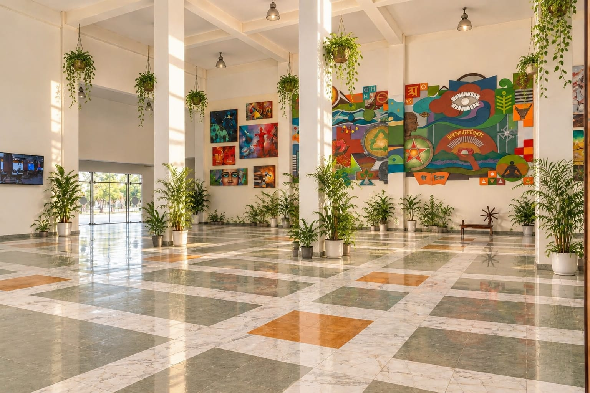

Drag to see the before & after.
Corporate Office Transformation
Workspace HQ
Dead, stark corridors drain productivity. We transformed this cold corporate floor into a vibrant, oxygen-rich environment designed to reduce stress and boost employee well-being.
- • More focused and calm environment
- • Improved lighting & spatial flow
- • Long Term maintenance support
Hospitality & Dining
Fine Dining Ambience
Diners seek an experience, not just a meal. By integrating architectural planters and lush overhead greenery, we created an intimate, natural acoustic barrier that elevated the entire dining aesthetic.
- • Elevated premium guest experience
- • Strategic natural privacy screening
- • Weekly stealth maintenance routines
Educational Institutions
University Atriums
Sterile campus buildings are a thing of the past. We bring life to study halls, libraries, and university lobbies, creating inspiring biophilic environments that foster focus and calm for students.
- • High-durability plant selections
- • Improved campus sustainability score
- • Automated self-watering integration
